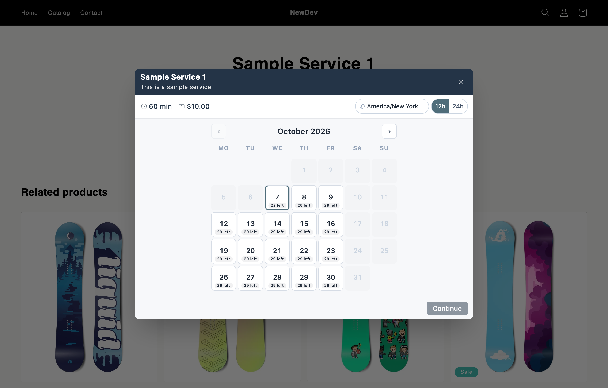
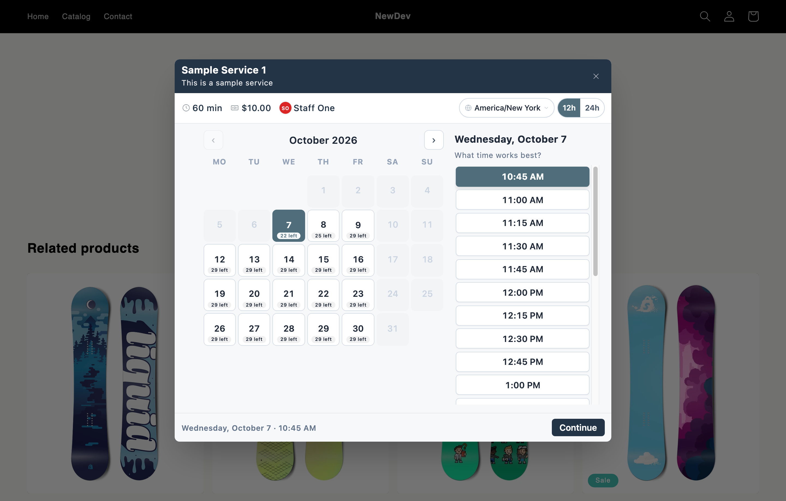

The reviewer's screenshots showed the booking modal for "Sample Service 1"
with no selectable dates and a disabled Continue. Cause: the service had no staff member
assigned and the staff member had no working hours, and the app allowed that state
silently. The screenshots below show the resolved state of the same flow, captured on a
development store after the fix was deployed to production on October 7, 2026.
1. The same booking modal now offers selectable dates

Sample Service 1, modal open: weekday dates are selectable with remaining
slot counts. Mirrors the reviewer's first screenshot, resolved.
2. Picking a date and time enables Continue

Date and time selected, Continue enabled, and the core booking flow
completes through checkout.
What was fixed (live for all installs)
New staff members start with default working hours (Mon to Fri, 9 AM to 5 PM), stated in the creation form and adjustable on their Schedule tab.
The in-app setup guide now walks merchants through the correct order: enable the widget, add a staff member, then create a service.
Creating a service without picking staff shows a clear warning first; a service left without staff gets a "Not bookable" badge in the service list and a banner on the service page linking straight to staff assignment.
The service created during the previous review was also repaired, so it now returns availability on the review store itself.